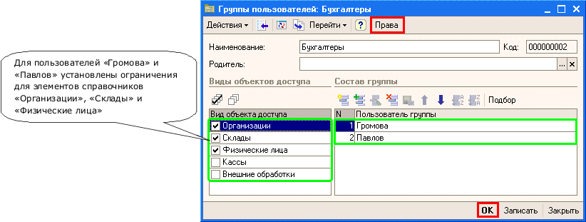

В справочнике "Группы пользователей" необходимо создавать элементы, и в форме созданного элемента заполнять табличное поле. В табличном поле необходимо указывать пользователей, которые входят в группу.
Права доступа настраиваются только для групп пользователей. Пользователь, не включенный ни в одну из групп, не имеет доступ к данным. Для конкретного пользователя права доступа «от групп» объединяются по «ИЛИ».
Справочник содержит предопределенный элемент "Все пользователи", определяющий группу пользователей, в которую входят все пользователи информационной базы. Права доступа для данной группы не настраиваются.
Пример заполнения справочника:

Рисунок 1 - Форма элемента справочника «Группы пользователей»
При записи элемента справочника в регистре сведений «Назначение видов объекта доступа» сохраняется соответствие назначенных для групп пользователей видов объектов доступа.
Для настройки прав доступа к конкретным объектам используется регистр сведений «Настройки прав доступа пользователей». Регистр может заполняться как вручную, так и с помощью обработки «Настройка прав доступа». Обработку можно вызвать из формы списка или из формы элемента справочника с помощью кнопки «Права» (см. Рисунок 1).